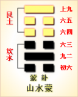

<!DOCTYPE html PUBLIC "-//W3C//DTD XHTML 1.0 Transitional//EN" "http://www.w3.org/TR/xhtml1/DTD/xhtml1-transitional.dtd">

<html xmlns="http://www.w3.org/1999/xhtml">
<head>
<meta content="text/html; charset=utf-8" http-equiv="Content-Type"/>
<title>周易第四卦：蒙卦 山水�?艮上坎下原文解释翻译-周易-国学�?/title>
<meta content="周易,蒙卦,山水�?艮上坎下" name="keywords"/>
<meta content="周易,蒙卦,山水�?艮上坎下，周易第四卦：蒙�?山水�?艮上坎下解释翻译�?（山水蒙）艮上坎�?《蒙》：亨。匪我求童蒙，童蒙求我。初筮告，再三渎，渎则不告。利贞�?初六，发蒙，利用刑人，用说桎梏，以往吝�?九二，包蒙，吉。纳妇，吉。子克家�? name="description"/>
<link href="css.css" media="screen" rel="stylesheet" type="text/css"/>
</head>
<body>
<div class="gxlayout">
</div>
<div class="gxlayout">
<div class="ihead">
<div class="title"><a>周易</a></div>
<ul class="more fl">
<li>当前位置:<a>国学梦首�?/a> &gt; <a>国学经典</a> &gt; <a>经部</a> &gt; <a>四书五经</a> &gt; <a>周易</a> &gt;  周易第四卦：蒙卦 山水�?艮上坎下原文解释翻译</li>
</ul>
</div>
<div class="gxbl fl">
<div class="latitle">

<h1>周易第四卦：蒙卦 山水�?艮上坎下</h1>
<div class="lainfo"><span>作者：佚名</span> <span>全集�?a>周易</a></span> <span>来源：网�?/span> <span>[<a rel="nofollow" target="_blank">挑错/完善</a>]</span></div>
</div>
<div class="lacontent">
<div class="clearfix"></div>
<p style="text-align:center"></p>
<p style="text-align:center"><a>周易第四卦详�?/a></p>
<p style="text-align:center"><a>第四卦初六爻详解</a>　<a>第四卦九二爻详解</a>　<a>第四卦六三爻详解</a></p>
<p style="text-align:center"><a>第四卦六四爻详解</a>　<a>第四卦六五爻详解</a>　<a>第四卦上九爻详解</a></p>
<p><strong><a target="_blank">周易</a>第四�?�?山水�?艮上坎下</strong></p>
<p>蒙：亨。匪我求童蒙，童蒙求我。初噬告，再三渎，渎则不告。利贞�?/p>
<p>彖曰：蒙，山下有险，险而止，蒙。蒙亨，以亨行时中也。匪我求童蒙，童蒙求我，志应也。初噬告，以刚中也。再三渎，渎则不告，渎蒙也。蒙以养正，圣功也�?/p>
<p>象曰：山下出 泉，�?君子以果行育德�?/p>
<p>初六：发蒙，利用刑人，用说桎梏，以往吝。象曰：利用刑人，以正法也�?/p>
<p>九二：包蒙吉;纳妇�?子克家。象曰：子克家，刚柔接也�?/p>
<p>六三：勿用娶�?见金夫，不有躬，无攸利。象曰：勿用娶女，行不顺也�?/p>
<p>六四：困蒙，吝。象曰：困蒙之吝，独远实也�?/p>
<p>六五：童蒙，吉。象曰：童蒙之吉，顺以巽也�?/p>
<p>上九：击�?不利为寇，利御寇。象曰：利用御寇，上下顺也�?/p>
<p><strong><a href="04_蒙卦.html" target="_blank">蒙卦</a>卦象，山水蒙卦的象征意义</strong></p>
<p><strong>蒙卦�?a target="_blank">易经</a>六十四卦中的第四卦：蒙，山水蒙卦有怎样的象征意义呢?</strong></p>
<p>蒙卦是教育启蒙的智慧，艮为山，坎为泉，山下出泉。泉水始流出山，则必将渐汇成江河,正如蒙稚渐启，又山下有险，因为有险停止不前，所以蒙昧不明。事物发展的初期阶段，必然蒙昧，所以教育是当务之急，养学生纯正无邪的品质，是治蒙之道�?/p>
<p>蒙卦，这个卦是异卦相叠，下卦为坎，上卦为艮。艮是山的形象，喻止;坎是水的形象，喻险。卦形为山下有险，仍不停止前进，是为蒙昧，故称蒙卦。但因把握时机，行动切合时宜;因此，具有启蒙和通达的卦象�?/p>
<p>《蒙》卦是《屯》卦这个始生卦之后的第二卦。《序卦》中说：“物生必蒙，故受之以蒙。蒙者，蒙也，特之稚也。”物之幼稚阶段，有如蒙昧未开的状态，在人则是指童蒙�?/p>
<p>《象》中这样解释蒙卦：山下出泉，�?君子以果行育德�?/p>
<p>这里指出：蒙卦的卦象是坎(�?下艮(�?上，为山下有泉水之表象，但要想发现甘泉，必须设法准确地找出泉水的位置，即意味着先必须进行启蒙教育。君子必须行动果断，才能培养出良好的品德�?/p>
<p>蒙卦象征启蒙奋发，属于中下卦。《象》中对此卦的断语是：卦中爻象犯小耗，君子占之运不高，<a target="_blank">婚姻</a>合伙有琐碎，做事必然受苦劳�?/p>
<p>蒙卦的上卦为艮为山，下卦为坎为水，山下的水蒸腾而形成雾气，好一派山水蒙蒙的自然景致!这便是蒙卦的卦象。卦<a target="_blank">�?/a>形成的卦象与“蒙”字的含义结合起来。便是细雨澈蒙，山水间雾气腾腾，一�?a target="_blank">田园</a>山水画。这种朦胧的景致，是天地初幵，云行雨施造成的。所�?a href="03_屯卦.html" target="_blank">屯卦</a>表示事物的萌芽时期，而蒙卦则表示事物的进一步生长。于是它便有蒙昧初开的含义，也就是说即将走出蒙昧的状态中。走出蒙昧。便是这一卦的含义。人类是怎样走出蒙昧的呢?下面我们通过卦辞进行分析�?/p>
<p>关键词：周易,蒙卦,山水�?艮上坎下</p>
<div class="clearfix"></div>
<div class="title"><div class="thot">解释翻译</div><span>[挑错/完善]</span></div><p><a href="04_蒙卦.html" target="_blank">蒙卦</a>：亨通。不是我请教蒙昧愚蠢的人，而是蒙昧愚蠢的人请教我。把第一次占筵的结果告诉了他，他却不恭敬地再三占�? 对不恭敬的占筮，神灵不会告知。吉祥的占卜�?/p>
<p>初六：最好利用有罪的奴隶去伐木开荒，因此解开他们身上的枷锁。如果外出，不吉利�?/p>
<p>九二：捆扎割下的荒草，吉利。正式礼聘迎娶妻子，吉利。男女一起建立家庭�?/p>
<p>六三：不要抢夺女子成婚，碰上拿着武器的人，会丧失性命。这样做没有什么好处�?/p>
<p>六四：捆扎荒草。有危险�?/p>
<p>六五：砍伐树木。吉利�?/p>
<p>上九：割草伐木。充当强盗不利，抵御强盗有利�?/p>
<div class="title"><div class="thot">注释出处</div><span>[请记住我�?国学�?www.guoxuemeng.com]</span></div><p>(1)蒙是本卦标题。蒙的意思是高地上草木丛生。由于“蒙”字在本卦中多次出现，所以用它来作标题。全卦内容主要讲开荒垦植，也涉及到了家庭婚事等�?/p>
<p>(2)我：占筮的人。童蒙：蒙昧愚蠢的人，指求筮的人�?/p>
<p>(3) 渎：不恭敬，这里指亵读占筮�?/p>
<p>(4)发蒙：垦荒时割草伐木。刑人：受过 刑的人，指奴隶�?/p>
<p>(5)说：等于“脱”�?/p>
<p>(6)以：等于“如”，如果�?/p>
<p>(7)包蒙：捆扎割下的荒草�?/p>
<p>(8)纳妇：迎娶妻子�?/p>
<p>(9)克家：建立家庭�?/p>
<p>(10)取女：抢夺女子成婚�?/p>
<p>(11)金夫：武夫，拿着武器的男人�?/p>
<p>(12)不有躬：丧失生命�?/p>
<p>(13)困蒙：捆扎荒草�?/p>
<p>(14)童蒙：童用作“撞击”的撞。童蒙的意思是砍伐树木�?/p>
<p>(15)击蒙：砍伐树木�?/p>
<p>(16)寇：强盗，侵略者�?/p>
<div class="clearfix"></div>
<div class="contextdhall clearfix">
<ul>
<li>上一篇：<a href="03_屯卦.html">周易第三卦：屯卦 水雷�?坎上震下</a> </li>
<li>下一篇：<a href="05_需�?html">周易第五卦：需�?水天需 坎上乾下</a> </li>
<li>全   文�?a>周易</a></li>
</ul>
</div>
</div>
<div class="clearfix mt20"></div>
</div>
</div>
<div class="clearfix mt20"></div>
<div class="gxlayout">
</div>
<script>
var _hmt = _hmt || [];
(function() {
  var hm = document.createElement("script");
  hm.src = "https://hm.baidu.com/hm.js?872034ded637616c5cf8e173a446bb0e";
  var s = document.getElementsByTagName("script")[0];
  s.parentNode.insertBefore(hm, s);
})();
</script>
</body>
</html>
